正しい理解と正しい治療を―根管治療
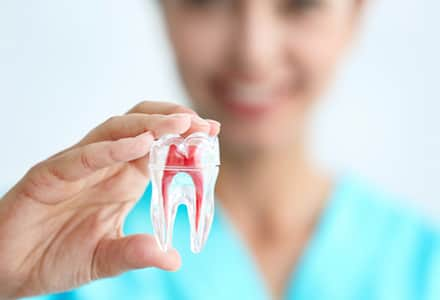
歯の中にある根管という管の中から、神経や細菌、古い充填材料などを取り除き、充填物で密閉する治療法を根管治療といいます。根管は細く枝状で複雑な形をしているため、細い針状の器具と根管内を拡大して見ることのできるマイクロスコープを使用し、丁寧に不要物を取り除く必要があります。
根管治療は、知識と経験・技術を持っている専門の歯科医師がきちんとルールを守り治療することで、再発の可能性を非常に低くすることができます。藤沢の歯医者、玉木歯科医院では大学病院で根管治療を専門に行っている歯科医師による、再発をできる限り抑えた治療をご提供しています。
技術と経験のある歯科医師医師による治療
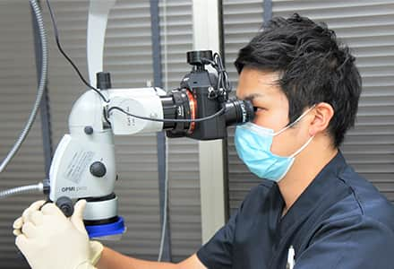
根管系は複雑な形をしており、とても治療が難しく、従来の保険治療では再発率が50％以上でした。前述したマイクロスコープやニッケルチタンファイル、薬剤などは、専門的に技術を磨き、知識の豊富な歯科医師が正しく使うことで、初めて効果的なものとなります。当院では、患者様に再発のない最適な治療をご提供するため、大学病院で専門診療を行っている歯科医師が根管治療を行っています。
根管治療担当医師：平井佑弥
| 略歴： |
国立長崎大学歯学部卒業 神奈川歯科大学附属横浜クリニック成人歯科歯内療法部門勤務 |
|---|
海外と日本の根管治療の成功率の違い
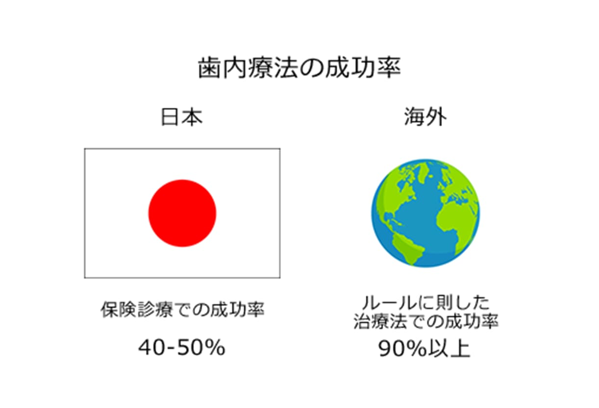
根管治療の成功率は、海外では90％、日本の一般歯科医院では50％と言われています。海外では根管治療に対する専門的な教育をうけ、さらに診療環境の整備がしっかりとなされているため90％という高い成功率を誇っています。一方日本の一般歯科医院では、治療内容に制限のある、保険診療を利用した治療を行う患者様が多いため、費用の関係上、十分な時間の確保が難しく、最先端の設備・器具を使用できず、精度の高い治療の提供が難しいのが現状です。
しかし、日本でも海外の知識や技術を学んだ根管治療の経験が豊富な歯科医師がいます。そのような歯科医師がルールに則した治療を行うことで成功率が上がり、再発する可能性が低い治療を行うことができます。
正しい根管治療を行うためには
無菌的な環境づくり
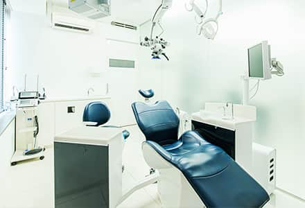
根管治療が必要な歯は、細菌感染が原因であり、その細菌を出来る限り少なくすることが治療の本質です。そのため、使用する器具・器材の滅菌処理の徹底など、感染を防止する環境、すなわち無菌的な環境をつくることが非常に大切です。また、治療に関しても根管内をいかに無菌的状態にするかが成功の鍵になります。そのため、ラバーダム防湿法という方法で、治療する歯以外の口腔内全体をゴムのシートで覆い、細菌が根管内に入らないようにするなど、徹底した無菌的な環境作りが必要になります。
知識と技術のある医師による診療
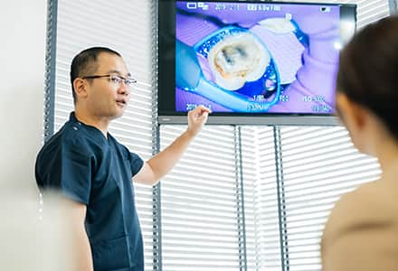
根管治療は、マイクロスコープやニッケルチタンファイルなど、様々な機器を使用します。CTを使用し精密な検査・診断をするところから時間をかけて丁寧に治療をすることが大切です。ただし、正しく使いこなせなければ、機器だけを揃えていても意味がありません。しっかりとした専門的な知識や技術のある歯科医師が診療することが重要です。当院では大学病院で専門診療を行っている歯科医師が診療いたします。
精密機器を導入し、精度の高い根管治療をご提供
再治療の必要のない根管治療のために
視野拡大のための【マイクロスコープ】
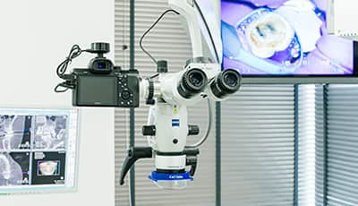 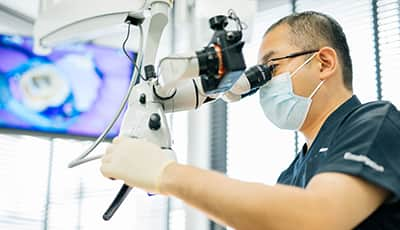
マイクロスコープとは、最大25倍という高倍率で患部を拡大して見ることのできる、手術用顕微鏡です。裸眼では決して確認することのできない、根管口という神経の部屋の入口や、破折線という亀裂部分なども見つけることができます。
根管治療において、根管内をできるだけ詳しく見ることが治療の成否を分けるといえるため、成功率を上げるためには絶対に欠かすことのできない機材です。
正確な診査診断をするための【歯科用3ＤＣＴ、歯髄電気診、温熱テスト】
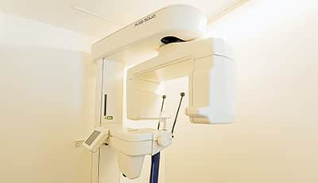 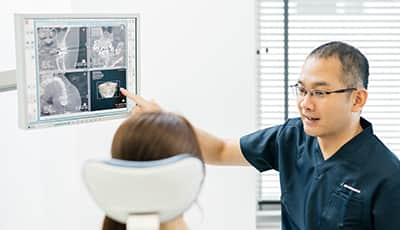
根管の構造は非常に複雑で、患者様一人ひとり異なるため、従来の二次元のレントゲンでは根の構造を正確に捉えることができません。そこで当院では、歯の内部を立体的に撮影できる歯科用3ＤＣＴを導入しています。さらに、歯の神経の生死を判定するための歯髄電気診、温熱テストという温熱刺激での痛みがあるかどうかの反応のチェックを行い、的確な診査・診断を行ったうえで治療方針を決め、根管治療の成功の可能性を高めています。
神経を除去する【ニッケルチタンファイル】
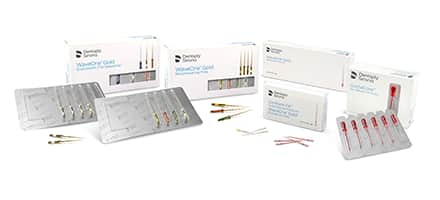 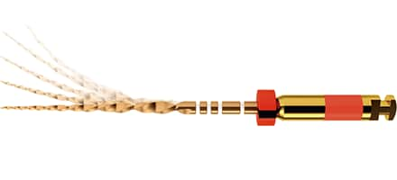
ニッケルチタンファイルとは、虫歯に侵された神経を除去するための器具です。根管治療で使用する「ファイル」は、大きく分けて二種類あります。ひとつが「ステンレスファイル」、もうひとつが「ニッケルチタンファイル（Ni-Tiファイル）」です。従来のステンレス製のファイルは、柔軟性に乏しく彎曲している根管に追従できないとされています。一方、ニッケルチタンファイルは十分な柔軟性を持ち、根管治療の迅速化が図れます。
当院では、より正確に神経を除去できるニッケルチタンファイルを導入し、できる限り再発率を抑えた治療を提供しております。
根管内の殺菌を行う【MTAセメント】
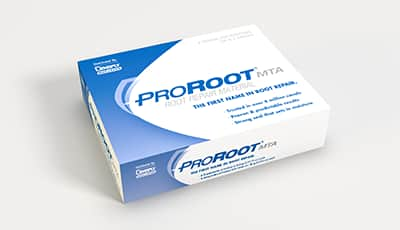
MTAセメントとは、歯の神経を取り除いた後の隙間を埋めるために使用する薬剤です。
根管治療の最後の仕上げでは、空洞になった根管内を塞ぎますが、この隙間を完全に塞ぐことができなければ、のちに再治療となってしまう可能性があります。通常、従来のガッタパーチャと呼ばれる、ゴム素材のようなもので塞ぎますが、それでは対応できないケースに使用します。また殺菌作用が強く接着性があり、歯の組織を再生させる効果もあります。
ただし、扱いに慣れている歯科医師が正しい方法で行わないと効果がありません。当院では大学病院で根管治療を専門に行っている歯科医師が、豊富な知識と経験を駆使し、治療を行っています。
無菌状態を保つための【ラバーダム防湿】
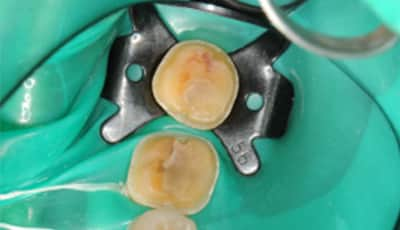
ラバーダム防湿とは、口腔内の唾液や細菌による治療部位の感染を防止する道具です。治療する歯以外を薄いゴム製シートで覆いかぶせて、唾液はもちろん、様々な口腔内細菌が根管に侵入するのを防ぎ、無菌的な環境に近づけます。根管の構造は非常に複雑である為、器具では30%程しか清掃できないといわれています。そのため、器具で清掃できない部分には非常に高濃度の薬剤を使う必要があり、なおさらラバーダム防湿を使用しないと大変危険です。
ラバーダム防湿の使用率
アメリカでは必須の処置となりますが、日本でラバーダム防湿を必ず使用するという医院は、専門的に治療を行っている医師の中でも25％となっており、この普及率の差が成功率の差に表れています。ラバーダム防湿を使用した治療は、根管治療をする上でとても重要なことなのです。
- 根管治療を専門とする
日本歯内療法学会の会員 *1) -
- ラバーダム防湿法を必ず使用する … 25%
- ラバーダム防湿法を必ず使用しない … 50%
- 日本歯内療法学会の会員以外 *1)
-
- 必ず使用する … 5%
- アメリカ合衆国の
根管治療専門医 *2) -
- ラバーダム防湿法の使用率 … 90%以上
【参考】
1）吉川ら：根管処置におけるラバーダム使用の現状.日歯内療法誌,24：83-86,2003.
2）whitten BH et al : Current trend in endodontic treatment : report of a national surgery. J Am Dent Assoc,127:133-1341,1996
治療例
| 治療前 |
|---|
| 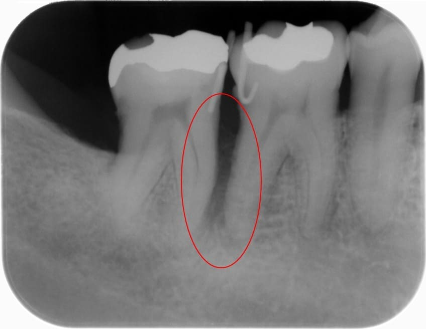 |
| 治療後 |
|---|
| 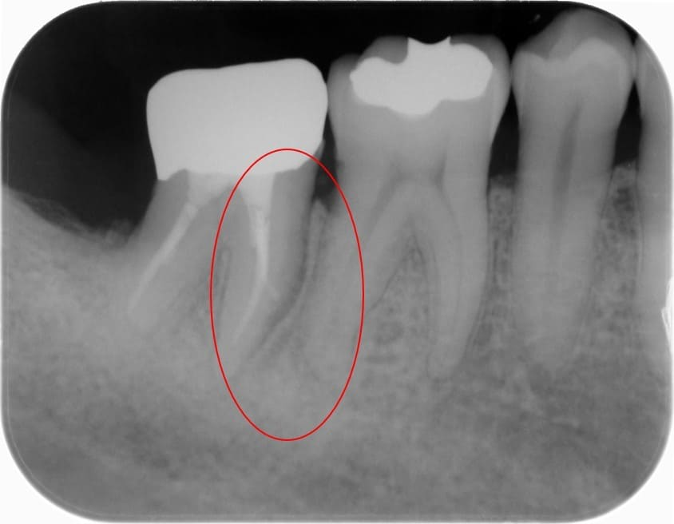 |
| 患者様からの主訴 | 右下の奥歯が噛むと痛い。歯茎におできのようなものが出来ている。 |
|---|---|
| 治療方針 | 右下7番は歯髄電気診、温熱診とも反応が無く、歯髄が失活していたが付着は喪失していない状態であった。コンセプトを遵守した精密根管治療をマイクロスコープ下で行い、改善が認められない場合は外科的歯内療法を行う旨を患者へ説明し同意を得た。 |
| 治療期間 | 2ヶ月 |
| 治療費（税込） | 11万円（精密根管治療+ファイバーポストコア代、被せ物の費用は含まない） |
| 治療におけるリスク | 特に無し |
料金表
※表は左右にスクロールして確認することができます
| 前歯 | 小臼歯 | 大臼歯 | |
|---|---|---|---|
| イニシャル | ¥55,000 | ¥66,000 | ¥88,000 |
| リトリートメント | ¥77,000 | ¥88,000 | ¥99,000 |
| ファイバーポストコア | ¥22,000 | ||
| 破折診断 | ¥33,000 | ||
| 生活歯髄療法 | ¥33,000 | ||
| MTA根充 | 根管治療代 ＋ ¥11,000 | ||
| MTAリペア | ¥11,000（１ヶ所につき） | ||
| 破折ファイル除去/本 | ¥11,000（１ヶ所につき） | ||
※すべて税込